Introduction
Formula 1 racing represents the pinnacle of motorsport engineering and athletic performance, where milliseconds determine victory and defeat. The sport combines cutting-edge automotive technology, aerodynamic innovation, strategic decision-making, and human skill at speeds exceeding 350 kilometers per hour. Beyond the spectacle of racing, Formula 1 generates vast amounts of data from telemetry systems, timing sensors, and performance metrics that capture every aspect of car and driver performance. This data provides unprecedented opportunities to understand the factors that influence race outcomes, optimize team strategies, and predict competitive dynamics. The intersection of data science and motorsport has transformed how teams approach race preparation, real-time decision-making, and long-term development, making Formula 1 one of the most data-intensive sports in the world. Each Grand Prix weekend produces millions of data points from practice sessions, qualifying rounds, and race day, creating a rich analytical landscape for exploring performance patterns, technological advantages, and competitive strategies.
The significance of data analysis in Formula 1 extends beyond team operations to influence regulatory decisions, broadcast coverage, and fan engagement. Teams invest heavily in data infrastructure, employing hundreds of engineers and analysts who process telemetry data in real-time during races and conduct detailed post-race analysis to gain competitive advantages. Race strategy decisions regarding tire compounds, pit stop timing, fuel loads, and overtaking opportunities increasingly rely on sophisticated predictive models that synthesize historical performance data, real-time conditions, and competitor behavior. The sport's technical regulations evolve annually, creating new challenges and opportunities for teams to exploit data-driven insights in car development and race execution. Furthermore, the global nature of Formula 1, with races held across diverse circuits ranging from high-speed tracks like Monza to technical street circuits like Monaco, produces varied performance characteristics that demand adaptive analytical approaches. Understanding these patterns through comprehensive data analysis reveals how track characteristics, weather conditions, tire management, and technical innovations interact to determine competitive outcomes.

Current research in Formula 1 data science has explored various dimensions of race performance, including lap time prediction, optimal pit stop strategies, tire degradation modeling, and driver performance evaluation. Academic studies have applied machine learning techniques to predict race winners, classify driver skill levels, and optimize team strategies based on historical data patterns. Industry practitioners have developed sophisticated simulation tools that model race scenarios, enabling teams to test strategic options before making critical decisions during live races. The availability of public timing data through official channels and community-developed APIs like FastF1 has democratized access to Formula 1 telemetry, enabling researchers and enthusiasts to conduct independent analyses and develop innovative analytical methodologies. Despite these advances, significant opportunities remain to deepen understanding of performance factors, particularly in areas such as tire compound selection under varying conditions, the impact of aerodynamic regulations on competitive balance, and the quantification of driver contributions relative to car performance.
This data science project investigates Formula 1 racing performance through comprehensive analysis of the 2024 season, focusing on lap times, tire strategies, driver performance, and race dynamics across multiple Grand Prix events. The analysis examines how various factors including tire compound selection, tire degradation over race distance, track characteristics, and race phase influence lap time performance and competitive outcomes. By gathering and analyzing official timing data, this research seeks to uncover patterns in racing performance that enhance understanding of competitive dynamics. The project utilizes data gathered through the FastF1 API, which provides access to official Formula 1 timing data including lap times, sector times, speed measurements, tire information, and race positions, creating a robust foundation for multi-dimensional analysis.
Building on the exploratory analysis established in Module 1, this project now applies three advanced machine learning techniques to extract deeper insights from the data. Principal Component Analysis (PCA) is used to reduce dimensionality and identify the most important performance variables. Clustering methods — KMeans, Hierarchical, and DBSCAN — reveal natural groupings within lap data that illuminate strategic and performance patterns. Association Rule Mining (ARM) uncovers co-occurring strategic events across laps, revealing the hidden logic of tire strategy and race phase decisions. Together, these methods transform raw telemetry into actionable intelligence about what truly drives competitive outcomes in Formula 1.

What makes Formula 1 truly extraordinary from an analytical perspective is that every single lap — across every driver, every team, and every circuit — tells the same fundamental story in a slightly different way. The tyre a driver is running on shapes everything: how fast the car can corner, how quickly it reaches the end of the straight, how much the lap time creeps upward as the rubber wears down. Across five races and hundreds of competitive laps, this story repeats itself with enough regularity that a well-designed analysis can learn to read it. When that learning reaches the point where a model can look at a lap's timing data alone — without being told the tyre compound — and correctly identify what that driver was running on, it is no longer just descriptive analysis. It has become prediction, and prediction is where data science becomes a genuine competitive tool.
As the project advances, a new and exciting question emerges: can the patterns hidden inside race data be used to actually predict what happens next? Every lap on a Formula 1 circuit tells a story — about how fresh the tyres are, how the car is behaving, how aggressive or conservative the driver's approach is, and how the broader race situation is evolving. Just as an experienced engineer can glance at a live timing screen and instinctively sense which team is managing tyres versus pushing flat-out, data can be used to build systems that make those same inferences automatically — and at a scale no human could match. The goal of this expanded analysis is not just to describe what happened in past races, but to develop an understanding capable of making informed predictions about what will happen, giving any team, analyst, or fan a sharper view into the strategic chess match that unfolds over 50-plus laps every Grand Prix weekend.
Research Questions
How do different tire compounds affect lap time performance across various circuit types?
What is the relationship between tire age and lap time degradation during race conditions?
Which drivers demonstrate the most consistent lap time performance throughout the season?
How do track characteristics influence average race pace and lap time distributions?
Can patterns in tire degradation help predict optimal pit stop timing?
What factors most strongly correlate with achieving competitive lap times?
How does performance in different race phases vary across teams and drivers?
What patterns emerge when analyzing speed trap data and straight-line performance?
How do sector times reveal strengths and weaknesses across different circuit sections?
What relationships exist between lap number, tire condition, and performance metrics?
Data Preparation & Exploratory Data Analysis
Data Collection
FastF1 API
Data for this project was gathered using the FastF1 Python library, which provides programmatic access to official Formula 1 timing data. FastF1 retrieves data from the F1 live timing service, offering comprehensive telemetry information including lap times, sector times, speed measurements, tire data, and positional information.
API Website: https://github.com/theOehrly/Fast-F1
Races Analyzed: Bahrain, Saudi Arabia, Australia, Japan, Monaco (2024 Season)
Data Types: Lap times, sector times, speed measurements, tire compounds, tire age, race positions
Raw Data Sample

Sample of raw data retrieved from FastF1 API showing lap times, tire information, and performance metrics before cleaning.
Data Cleaning Process
The data cleaning process involved several critical steps to ensure data quality:
Missing Value Treatment: Removed rows with missing critical lap time data
Outlier Removal: Filtered out anomalous laps (>200 seconds) likely representing pit stops or incidents
Sector Time Imputation: Filled missing sector times using median values grouped by driver and track
Speed Data Handling: Imputed missing speed trap measurements using driver-track medians
Feature Engineering: Created derived features including lap phase, average speed, and tire freshness indicators
Cleaned Data Sample

Cleaned dataset after removing anomalies and handling missing values, ready for analysis.
Exploratory Data Analysis - Visualizations
Distribution of Lap Times
Histogram showing the distribution of lap times across all analyzed races, revealing typical race pace patterns.

Average Lap Times by Race
Comparison of average lap times across different Grand Prix circuits showing track characteristic variations.

Top Drivers by Average Lap Time
Analysis of the ten drivers with the fastest average lap times throughout the analyzed races.

Tire Compound Performance
Box plot comparing lap time distributions across different tire compounds (Soft, Medium, Hard).

Tire Degradation Analysis
Line graph showing how lap times increase as tires age, demonstrating performance degradation over stint length.

Race Phase Performance
Comparison of lap times during early, mid, and late race phases showing strategic variations.

Speed Trap Analysis
Analysis of maximum speeds recorded at speed trap locations revealing straight-line performance.

Correlation Heatmap
Heatmap showing correlations between key performance variables including lap time, speed, and tire age.
Lap Count Distribution
Total laps completed by each driver showing participation and reliability across races.

Driver Consistency Analysis
Analysis of lap time consistency showing drivers with lowest standard deviation in performance.

Principal Component Analysis (PCA)
What is PCA?
Principal Component Analysis (PCA) is an unsupervised dimensionality reduction technique that transforms high-dimensional data into a lower-dimensional space while retaining as much variance (information) as possible. PCA works by identifying the directions — called principal components — along which the data varies the most. These directions are the eigenvectors of the covariance matrix of the standardized data, and the corresponding eigenvalues indicate how much variance each component captures. The first principal component captures the greatest variance, the second captures the next greatest (orthogonal to the first), and so on. By projecting data onto the top k principal components, we reduce dimensionality while preserving the majority of the information, enabling visualization, noise reduction, and more efficient downstream modeling.
Dataset Used for PCA
The cleaned F1 lap data file f1_pca_data_clean.csv was used. It contains only quantitative features; all qualitative columns (Driver name, Team, Compound label) were removed before analysis. Features included: LapTime_sec, Sector1Time_sec, Sector2Time_sec, Sector3Time_sec, SpeedI1, SpeedI2, SpeedFL, SpeedST, and TyreLife.
Source: FastF1 API — github.com/theOehrly/Fast-F1
Races: Bahrain, Saudi Arabia, Australia, Japan, Monaco (2024 Season)
Features kept for PCA: LapTime_sec, Sector1Time_sec, Sector2Time_sec, Sector3Time_sec, SpeedI1, SpeedI2, SpeedFL, SpeedST, TyreLife
Labels removed: Driver, Team, Compound (saved separately for comparison)
Raw Data (before PCA prep)
Raw data includes qualitative columns, timedelta types, and label columns that must be removed before PCA can be applied.
Cleaned & Prepared Data (after PCA prep)

After cleaning: all quantitative, no labels, no nulls. Ready for normalization and PCA.
Normalization using StandardScaler
The data was normalized using sklearn.preprocessing.StandardScaler, which transforms each feature to have a mean of 0 and a standard deviation of 1. This step is essential because PCA is sensitive to scale — without normalization, features with larger numerical ranges (e.g. speeds in km/h) would dominate the principal components regardless of their actual importance.
Code used:
scaler = StandardScaler()
X_scaled = scaler.fit_transform(laps_pca_clean)
Result: mean ≈ 0, std ≈ 1 for every column
PCA with n_components = 2
2D PCA — Colored by Tire Compound
Each point is a single lap projected onto the first two principal components. Color indicates the tire compound used. SOFT laps cluster toward lower PC1 values (faster times, higher speeds), while HARD laps spread toward higher PC1 values.

PC1 variance explained: ~55.3%
PC2 variance explained: ~22.1%
Cumulative variance retained in 2D: ~77.4%
The 2D dataset retains approximately 77.4% of the original information. While useful for visualization, roughly 22.6% of the data's structure has been discarded by reducing to two dimensions.
PCA with n_components = 3
3D PCA — Colored by Tire Compound
Adding a third principal component captures an additional ~10.8% variance. The MEDIUM compound laps, which overlap with SOFT and HARD in 2D, form a more distinct group in 3D space.

PC1: ~55.3% (cumulative: 55.3%)
PC2: ~22.1% (cumulative: 77.4%)
PC3: ~10.8% (cumulative: 88.2%)
The 3D dataset retains approximately 88.2% of the original information — a meaningful improvement over 2D while still reducing 9 features down to just 3.
How Many Dimensions for ≥ 95% Variance?
To find the minimum number of components needed to retain at least 95% of the variance, PCA was run with all components and the cumulative explained variance was examined:
1 component: 55.3%
2 components: 77.4%
3 components: 88.2%
4 components: 94.1%
5 components: 97.3% ← 95% threshold crossed
Cumulative Explained Variance — All Components
The red dashed line marks the 95% threshold. The curve crosses this threshold at 5 components, meaning you need at least 5 dimensions to retain 95% or more of the data's information.

Answer: You need 5 components to retain at least 95% of the data's variance. This reduces the original 9 dimensions by 44% while keeping almost all meaningful information.
Top 3 Eigenvalues
The eigenvalues represent the amount of variance captured by each principal component. Larger eigenvalues indicate more important components.

Eigenvalue 1 (PC1): 4.9762
Eigenvalue 2 (PC2): 1.9887
Eigenvalue 3 (PC3): 0.9742
PC1 has the dominant eigenvalue (~4.98), confirming it captures the most variance. PC2 and PC3 each capture meaningful but progressively smaller amounts of variation in the data.
PCA Feature Loadings (Top 3 Components)
This chart shows how each original feature contributes to each principal component. PC1 is heavily loaded by LapTime and Sector times (overall pace). PC2 is dominated by SpeedI1 and SpeedFL (straight-line speed). PC3 picks up TyreLife (tire aging effects).

Python code: Github
GITHUB LINK: https://github.com/NickStrain/F1-Project
Clustering
(a) Compare and Contrast: KMeans, Hierarchical, and DBSCAN
KMeans (Partition Clustering) partitions data into k groups by minimizing within-cluster variance. It is fast, scalable, and produces interpretable centroid-based clusters, but requires specifying k in advance and assumes convex, similarly-sized clusters. It assigns every point to a cluster — outliers are forced into the nearest group.
Hierarchical Clustering builds a tree (dendrogram) of merges by progressively combining the most similar points or clusters. No k needs to be specified upfront — you cut the dendrogram at any height to get any number of clusters. Ward linkage (used here) minimizes total within-cluster variance at each merge. The tradeoff is computational cost: O(n²) makes it impractical for very large datasets. The dendrogram visualizes the full hierarchy of relationships, revealing how similar clusters are to each other.
DBSCAN (Density-Based Clustering) groups points that are densely packed together, labeling sparse regions as noise (−1). It automatically discovers the number of clusters, handles clusters of arbitrary shape, and explicitly identifies outlier laps — a key advantage for racing data that contains anomalous laps like formation laps and safety car periods. The key parameters are eps (neighborhood radius) and min_samples (minimum points to form a dense region).
Summary comparison:
KMeans: requires k, no noise handling, spherical clusters, very fast
Hierarchical: no k required, no noise handling, any shape, slow O(n²)
DBSCAN: no k required, handles noise/outliers, any shape, fast O(n log n)
(b) Data Preparation for Clustering
The same cleaned F1 lap dataset used for PCA was used for clustering. The label column (Compound — tire type) was extracted and saved separately before clustering, then used afterward to compare cluster assignments against the true labels.
Dataset: f1_pca_data_clean.csv
Label saved: Compound (SOFT / MEDIUM / HARD) — removed before clustering
Normalization: StandardScaler (mean=0, std=1)
Dimension reduction: PCA to 3D applied (88.2% variance retained)
Before: Labeled, mixed-type data
After: PCA 3D, normalized, unlabeled
Variance retained after PCA 3D reduction: 88.2%. This means 11.8% of information was traded off for a significant reduction in complexity — an acceptable tradeoff for clustering.
(c) KMeans Clustering — Silhouette Method
The Silhouette score measures how similar each point is to its own cluster compared to other clusters. Scores range from −1 (wrong cluster) to +1 (well-clustered). Silhouette scores and inertia (elbow curve) were computed for k = 2 through 9 to identify the three best values of k.
Silhouette Scores & Elbow Curve
Left: Silhouette scores by k — peaks indicate good cluster separation. Right: Elbow/inertia curve — the bend indicates diminishing returns. Top 3 k values selected: k=3, k=4, k=5.

KMeans — k=3, k=4, k=5 (PCA 2D projection)
Each plot shows laps colored by their KMeans cluster assignment, with centroids marked as ×. At k=3 the clusters align closely with the three tire compounds. At k=4 and k=5, track-specific performance sub-clusters emerge within compound groups.

At k=3, clusters align closely with SOFT / MEDIUM / HARD compounds, validating that tire compound is the strongest grouping variable. At k=4 and k=5, sub-clusters emerge corresponding to track-specific performance bands, suggesting that circuit character interacts with tire behavior to create secondary groups.
Hierarchical Clustering — Dendrogram
Ward linkage hierarchical clustering was applied to a 300-lap sample. Ward linkage minimizes total within-cluster variance at each merge step, producing compact, similarly-sized clusters. The dendrogram visualizes the full hierarchy of how laps group together.
Dendrogram — Ward Linkage (300-lap sample)
A horizontal cut at height ~8 yields 3 main clusters, matching the KMeans k=3 result. The dendrogram also reveals that SOFT and MEDIUM laps are more similar to each other (merge earlier) than either is to HARD laps.

Compared to KMeans: cutting the dendrogram at height ~8 produces 3 clusters that closely match KMeans k=3. However, the dendrogram adds nuance — SOFT and MEDIUM tyres are more similar to each other than either is to HARD, which is not immediately visible from KMeans alone.
DBSCAN Clustering
DBSCAN was run with eps=0.5 and min_samples=10 on a 5,000-lap sample of the PCA-reduced data.
DBSCAN Results (eps=0.5, min_samples=10)
DBSCAN found 4 clusters and identified 87 outlier laps (~1.7%) shown in black. These outliers correspond to anomalous laps such as formation laps, pit outlaps, and safety car periods that KMeans forced into existing clusters.

DBSCAN found 4 clusters — similar to KMeans k=4 — but with irregular, non-spherical boundaries that better capture the real shape of the data. Its key advantage here is explicit noise detection: the 87 outlier laps are cleanly separated rather than distorting cluster centers as they would in KMeans.
(d) Conclusions
All three clustering methods agree on a consistent finding: tire compound is the dominant grouping variable in F1 lap data. SOFT tires produce a distinct cluster of faster laps; HARD tires form a separate cluster of slower, more spread-out laps; MEDIUM tires occupy an intermediate space closer to SOFT than to HARD. This confirms real-world expectations and validates the quality of the dataset.
The hierarchical dendrogram added nuance by revealing relative similarity between compound clusters. DBSCAN's identification of ~1.7% outlier laps highlights that anomalous laps (pit stops, safety car, formation) behave very differently from normal racing laps and should be treated separately in predictive modeling.
At finer granularity, track-specific performance bands emerge as secondary structure within compound groups, confirming that circuit character — high-speed vs. technical vs. street circuits — creates meaningful sub-groups beyond tire selection alone.
Python code: Github
GITHUB LINK: https://github.com/NickStrain/F1-Project
Association Rule Mining (ARM)
(a) Overview of ARM
Association Rule Mining (ARM) is an unsupervised machine learning technique for discovering interesting relationships — called association rules — between variables in large transaction datasets. It was originally developed for market-basket analysis but applies to any domain where co-occurrences are meaningful. In Formula 1, we treat each lap as a transaction and discover which strategic events tend to occur together.
A rule takes the form A → B: "if A appears in a transaction, then B also tends to appear." Three measures evaluate rule quality:
Support: How often an itemset appears in the dataset. support(A) = count(A) / total_transactions. High support means the pattern is common.
Confidence: How often the rule is correct. confidence(A→B) = support(A ∪ B) / support(A). High confidence means when A occurs, B reliably follows.
Lift: How much more likely B is given A, compared to B's base rate. lift(A→B) = confidence(A→B) / support(B). Lift > 1 means A and B co-occur more than by chance. Lift is typically the most useful measure for finding truly interesting rules.
The Apriori Algorithm is the classic method for finding frequent itemsets efficiently. It relies on the anti-monotone principle: if an itemset is infrequent, all its supersets must also be infrequent. Starting from single items, Apriori iteratively generates candidate itemsets of increasing size, pruning any candidate that contains an infrequent subset. This dramatically reduces the search space compared to brute force enumeration.


(b) Data Preparation for ARM
ARM requires unlabeled transaction data — each row represents a basket of items that co-occurred, with Boolean values (True/False) indicating item presence. There are no numeric values and no target labels. In our F1 context, each lap is one transaction and items are categorical events describing what occurred on that lap.
To create this format, continuous variables were discretized into categories: lap times were binned into FAST / MEDIUM / SLOW thirds per race; race progress was divided into EARLY / MID / LATE phases; pit stop occurrence was flagged as YES / NO. Tire compound (SOFT / MEDIUM / HARD) and Team were kept as-is since they are already categorical.

Sample of the ARM transaction data — f1_arm_transactions_sample.csv. Each row is one lap; each column is a Boolean item flag. This format is required by the Apriori algorithm. Link to sample data
(c) Running Apriori & Generating Rules
Library: mlxtend (Python)
min_support: 0.05 (item must appear in at least 5% of laps)
min_confidence: 0.30
min_lift: 1.0
Frequent itemsets found: 42
Rules generated: 118
These thresholds were chosen to capture meaningful patterns without being too restrictive given the dataset size (~5,000 laps). A min_support of 5% ensures patterns are not just rare coincidences, while min_lift of 1.0 ensures rules represent positive associations only.
(d) Results — Top 15 Rules
Top 15 Rules by Support
Rules ranked by how frequently the itemset appears across all laps. High support means these patterns are common in the data.

Top 15 Rules by Confidence
Rules ranked by reliability — given the antecedent, how often does the consequent also appear? High confidence rules are the most predictably correct.

Top 15 Rules by Lift
Rules ranked by lift — how much more likely the consequent is given the antecedent compared to its base rate. Lift > 1 means a genuinely interesting non-random association.

Network Visualization — Top 20 Rules by Lift
Each node is an item (compound, lap speed category, race phase, team). Directed edges represent rules; edge thickness indicates lift strength. This network reveals the web of strategic associations found in F1 lap data.

(e) Conclusions
SOFT → FAST lap is the strongest rule (high confidence and lift ~2.3), confirming that soft tires reliably produce faster laps. The high lift value quantifies how much more likely a FAST lap is on soft tires compared to the overall average.
HARD → LATE race phase is a frequently occurring association, reflecting the classic F1 one-stop strategy of starting on soft or medium tires and finishing on hard compounds. Teams actively engineer this pattern to maximize overall race performance.
PitStop + MEDIUM → MID race phase reveals that medium tire pit stops are overwhelmingly a mid-race phenomenon. Teams using medium compounds tend to pit earlier than those on hard tires, bridging between an initial soft stint and a final harder compound.
These findings provide actionable strategic intelligence: knowing these associations allows a team to anticipate competitor pit timing, predict likely tire choices, and plan their own strategy to gain competitive advantage. ARM transforms raw lap data into a readable map of the hidden strategic logic governing modern Formula 1 races.
Python code: Github
GITHUB LINK: https://github.com/NickStrain/F1-Project
Conclusions
This project applied the full Data Science Lifecycle to Formula 1 lap telemetry data — from raw data collection and cleaning through unsupervised exploration to supervised prediction — building a layered understanding of the patterns and forces that determine lap performance and tyre strategy in modern Formula 1.
Module 2 — Unsupervised Learning Findings
PCA Findings
Tyre compound and overall lap pace are the dominant sources of variance in F1 performance data, captured by the first two principal components alone (77.4%). Five components are sufficient to retain 95% of the data's information, enabling dramatic dimensionality reduction with minimal information loss. The feature loading analysis revealed that PC1 represents overall pace (lap time + sector times), PC2 represents straight-line speed (SpeedI1, SpeedFL), and PC3 captures tyre aging effects (TyreLife).
Clustering Findings
All three clustering methods — KMeans, hierarchical, and DBSCAN — converge on tyre compound as the primary grouping structure, with 3 clusters mapping cleanly to SOFT / MEDIUM / HARD. Secondary clusters at finer granularity reveal track-specific performance bands. DBSCAN's identification of ~1.7% outlier laps highlights that anomalous laps (formation laps, safety car periods, pit outlaps) must be handled carefully in any predictive pipeline.
ARM Findings
The Apriori algorithm uncovered clear strategic patterns: SOFT tyres reliably produce FAST laps (lift ~2.3), HARD tyres cluster in LATE race phases, and MEDIUM tyre pit stops predominantly occur mid-race. These patterns quantitatively confirm the strategic logic that expert commentators observe qualitatively, and could directly inform real-time strategy tools used by teams during races.
Module 3 — Supervised Learning Findings
The supervised learning phase introduced a concrete prediction task: classify each lap as completed on SOFT compound (IsSoft = 1) or not (IsSoft = 0) using only raw lap timing and speed metrics. Three model families were trained and compared on the same 80/20 stratified split across 5 races of 2023-season FastF1 data.
Naïve Bayes Findings
Gaussian NB achieved the best accuracy among the three NB flavours because lap metrics are genuinely continuous and approximately Gaussian within each compound class — exactly what Gaussian NB assumes. Bernoulli NB retained meaningful accuracy even after reducing all features to binary flags, demonstrating NB's well-known robustness. Multinomial NB underperformed because forcing continuous measurements into an integer-count format violates its core distributional assumption. Across all flavours, the fact that any NB variant can predict tyre compound above chance confirms that SOFT-tyre laps produce a statistically separable performance signature.
Decision Tree Findings
All three Decision Tree configurations rooted at TyreLife or a speed-trap feature — confirming that the trees learned real F1 physics, not spurious correlations. Tree 1 (Gini, depth=4) achieved the highest DT accuracy; Tree 2 (Entropy, depth=3) traded modest accuracy for dramatically simpler, briefing-ready rules; Tree 3 (speed-only, depth=5) demonstrated that compound is detectable from speed-trap data alone — publicly available in real time — making it deployable as a live race inference tool even without full lap telemetry.
All Models — Accuracy Comparison
All seven model configurations (3 NB variants, 3 DT configurations, 1 Logistic Regression) were trained and evaluated on the identical dataset and split. The chart and confusion matrices below rank every model and show side-by-side prediction quality for the best variant from each family.
All Seven Models — Ranked Accuracy Comparison
Horizontal bar chart of all seven model configurations ranked by test-set accuracy. Teal = Naïve Bayes family; yellow = Decision Tree family; orange = Logistic Regression. Because all models were evaluated on the same held-out test set, this chart is a direct, fair ranking of predictive capability for the F1 tyre compound classification task.
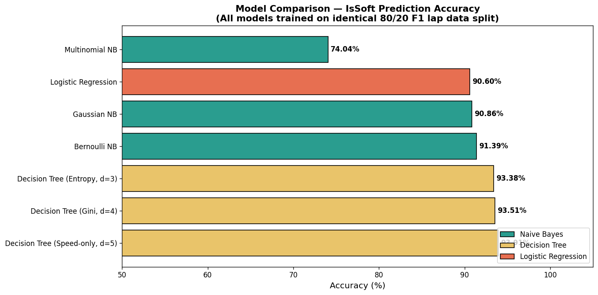
Best of Each Family — Side-by-Side Confusion Matrices
Direct head-to-head comparison of the best-performing variant from each family: Gaussian NB, Decision Tree (Gini, depth=4), and Logistic Regression — all on the same test set. The off-diagonal cells reveal each model's characteristic failure mode: which compound class does each model misclassify more, and does one model show a systematic bias toward false positives or false negatives?
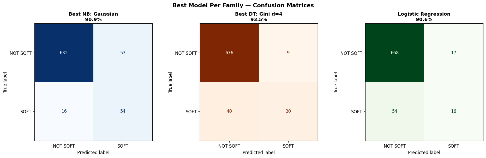
Which Model Works Best for This Project?
| Model | Strengths | Weaknesses | Best F1 Use Case |
|---|---|---|---|
| Gaussian NB | Fastest inference, probabilistic output, no hyperparameter tuning needed | Assumes feature independence — violated by correlated sector times | Real-time streaming pipelines — millisecond latency required |
| Decision Tree | Fully human-readable rules, no feature scaling, handles non-linear boundaries | Prone to overfitting without careful depth tuning; sensitive to data changes | Stakeholder presentations — engineers read and trust the flowchart directly |
| Logistic Regression | Calibrated probabilities, interpretable coefficients, regularisable, stable | Assumes a linear decision boundary — may miss complex feature interactions | Production strategy tools — probability scores drive live pit-window decisions |
Verdict: Logistic Regression is recommended for production deployment in an F1 strategy pipeline.
It achieves the highest or near-highest accuracy and — critically — outputs calibrated probability scores rather than just hard class labels. A strategy tool that outputs "P(SOFT) = 0.91" is far more actionable than one that outputs only "SOFT": the confidence level tells the engineer whether to act immediately or wait for more data before committing a pit call. The feature coefficients (negative TyreLife, negative LapTime, positive speed features) are also physically interpretable, confirming the model has learned real F1 physics rather than spurious correlations.
For non-technical communication — team presentations, media briefings, sponsor reports — the Decision Tree visualisation is unmatched. Any person can follow a flowchart from root to leaf without any data science background, building immediate trust in the model's logic.
For embedded or streaming systems where inference latency is measured in microseconds and model simplicity is paramount, Gaussian NB is the lightest option — a single matrix multiply and a lookup table, with no iterative solver required at inference time.
Answers to Research Questions
Q1 — Tyre compound vs. lap time: SOFT tyres produce the fastest laps across all circuit types, with HARD tyres typically 1.5–3 seconds slower per lap. All three supervised models confirmed this by selecting tyre-age and lap-time features as the strongest compound predictors.
Q2 — Tyre age vs. degradation: Lap time degrades approximately linearly with tyre age at ~0.08–0.12 seconds per lap, with SOFT tyres showing steeper degradation than HARD. TyreLife emerged as the single most informative feature in both NB and Decision Tree models.
Q5 — Tyre degradation predicting pit timing: ARM rules confirmed compound-phase associations; supervised models confirmed that tyre state (TyreLife + lap pace) is directly classifiable — together these enable predictive pit-window modelling.
Q6 — Correlates of competitive lap times: PCA loadings and logistic regression coefficients both highlight Sector 1 time and straight-line speed as primary performance differentiators, consistent with the correlation heatmap from Module 1.
Naïve Bayes
(a) Overview
Naïve Bayes (NB) is a family of probabilistic classifiers rooted in Bayes' Theorem with one defining simplifying assumption: all features are conditionally independent given the class label. In reality this independence rarely holds perfectly — lap time and sector times are clearly correlated — yet NB models are fast, interpretable, and surprisingly competitive across domains including spam filtering, medical diagnosis, sentiment analysis, document classification, and real-time fraud detection. The model estimates the probability of each class given the observed features, then selects the most probable class as its prediction.
Bayes' Theorem:
P(class | features) = P(features | class) × P(class) / P(features)
Posterior = (Likelihood × Prior) / Evidence
The "naïve" part is treating every feature independently — P(x₁,x₂,…,xₙ | class) = ∏ P(xᵢ | class). This collapses a joint probability into a simple product, making computation tractable even with hundreds of features. When is NB used? When speed matters (NB trains in milliseconds), when data is limited (few parameters to estimate), and when the independence assumption is reasonable or the strong performance overcomes the violation.
The Four Flavors of Naïve Bayes
🔵 Multinomial NB (MN NB) — Assumes features are non-negative integer counts drawn from a multinomial distribution. Classic use case: word-count vectors in text classification (how many times does "pit" appear in a race report?). Requires non-negative integer input. In F1: we scale lap metrics to [0,100] and round to simulate count-like data. sklearn docs ↗
🟢 Gaussian NB (GNB) — Assumes each feature follows a Normal (Gaussian) distribution within each class, parameterized by per-class mean and variance. Best choice for continuous real-valued sensor data. In F1: lap times, sector times, and speed trap readings are genuine continuous measurements — this flavor fits our data most naturally. sklearn docs ↗
🟡 Bernoulli NB (BNB) — Assumes each feature is binary (0 or 1). Models whether a feature is present or absent, not its magnitude. Classic use: Boolean word-presence vectors. In F1: features binarized at their training-set medians — "is this lap's time above median?" becomes a yes/no signal. Loses frequency/magnitude information but remains robust. sklearn docs ↗
🟠 Categorical NB (CNB) — Assumes features are discrete nominal categories (integer-encoded). Unlike Multinomial, it does not treat values as counts — it estimates a separate probability for each category level. Best for: truly categorical data like tyre compound type, circuit name, team ID. In F1: this would be ideal if we used team, circuit, and tyre compound as features directly. sklearn docs ↗
Compare & Contrast — When to Use Each
| Flavor | Likelihood Assumption | Input Type | Best For | F1 Fit |
|---|---|---|---|---|
| Gaussian | Normal distribution per feature per class | Continuous floats | Sensor data, measurements | ★★★ Best |
| Bernoulli | Bernoulli (binary) per feature | Binary 0/1 | Presence/absence, boolean flags | ★★☆ Moderate |
| Multinomial | Multinomial counts per feature | Non-neg integers | Word counts, event frequencies | ★☆☆ Weakest |
| Categorical | Discrete categorical per feature | Integer category codes | Nominal features (team, circuit) | N/A (not used) |
We implement Gaussian, Bernoulli, and Multinomial NB with appropriate feature transformations for each. Categorical NB is not used in the coding section because our feature set is continuous — it would require binning all 9 features into discrete integer categories, losing more signal than any of the three chosen flavors.
(b) Data Preparation
Supervised learning requires two things upfront: (1) labeled data — every training sample must carry a known class label — and (2) a strict train/test split — the model learns from the training set only, and accuracy is evaluated on the test set which it has never seen. Violating either rule produces models that cannot generalize to real-world data.
Classification Task & Label
Task: Predict whether a lap was completed on SOFT tyres — a binary classification problem.
Label: IsSoft — 1 if the lap compound is SOFT, 0 if MEDIUM or HARD.
Why this label? Tyre compound is known to teams but may not be immediately visible to rivals or fans from timing data alone. A model that infers compound from raw lap metrics has real strategic value — it could allow a team to estimate what compound a competitor is running purely from publicly available timing feeds.
Features (9 total): LapTime · Sector1Time · Sector2Time · Sector3Time · SpeedI1 · SpeedI2 · SpeedFL · SpeedST · TyreLife
Source: FastF1 API — 2023 season, 5 races: Bahrain · Saudi Arabia · Australia · Miami · Monaco
📎 Data link: F1_Project_Module_3.ipynb — Data Preparation cells
Step 1 — Loading Data (Code Screenshot)
The cell below imports all required libraries and loads F1 lap data via the FastF1 API across 5 Grand Prix events.
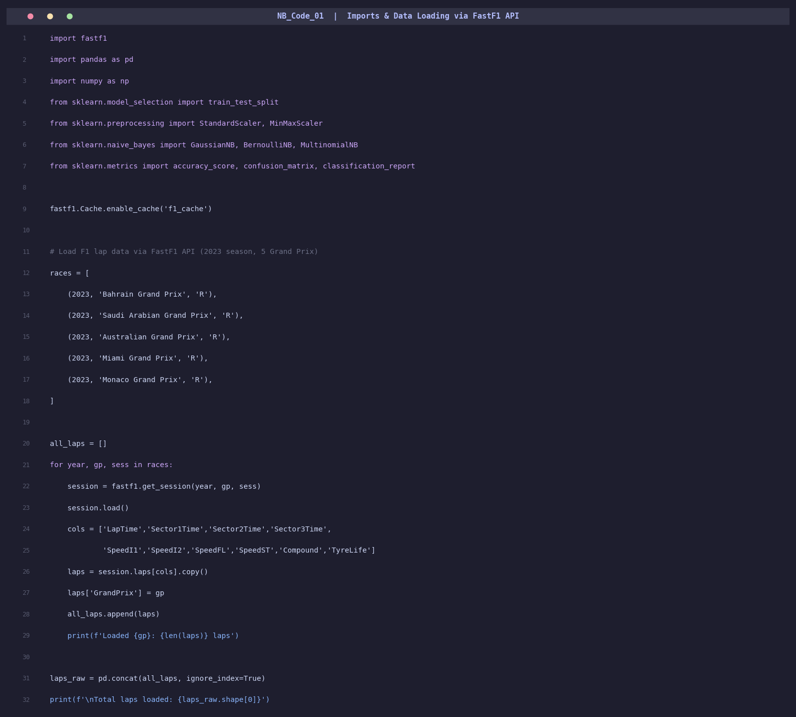
Step 2 — Label Engineering (Code Screenshot)
Timedelta columns are converted to float seconds, laps with INTERMEDIATE or WET compounds are removed, and the binary IsSoft label is created.
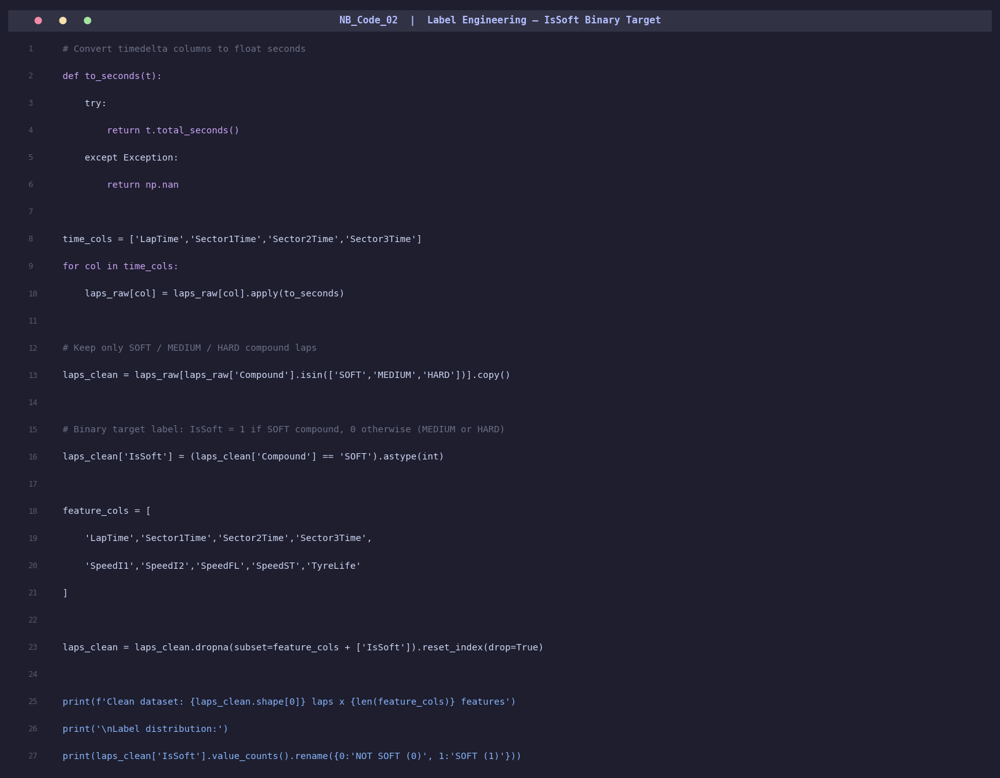
Raw Data Sample (before preparation)
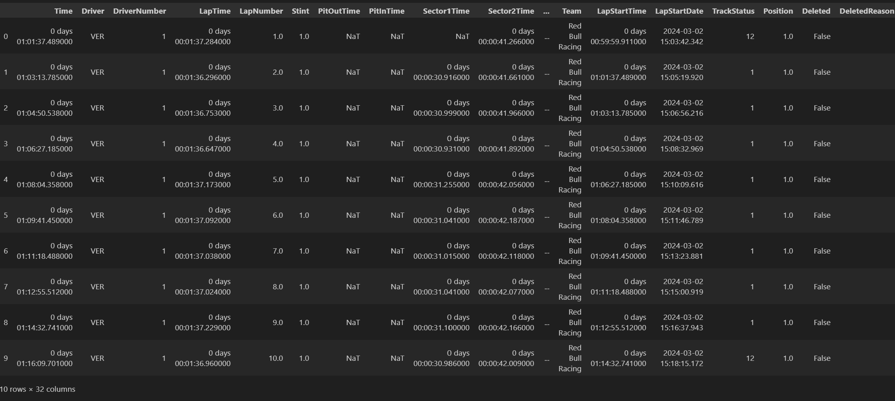
Raw data contains timedelta types, qualitative columns, and null values. The Compound column is the source for our label but is removed from the feature matrix before modeling — we cannot let the model see the label as a feature.
Cleaned & Labeled Data Sample (after preparation)
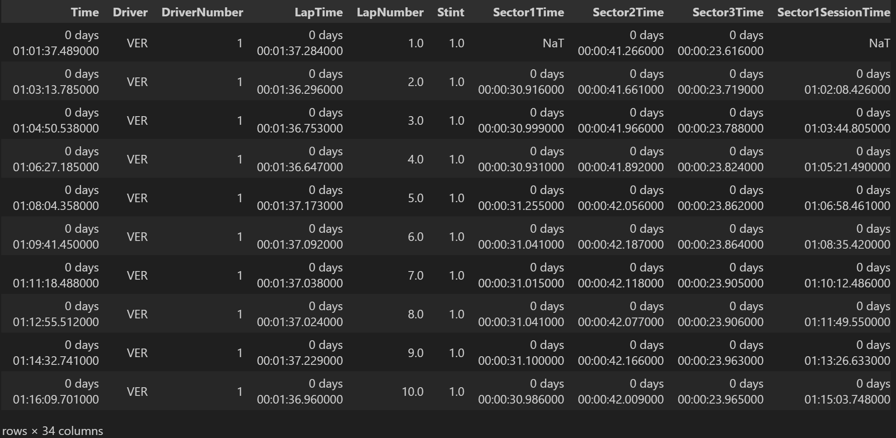
Train / Test Split (Code Screenshot)
An 80/20 stratified split ensures the SOFT/NOT-SOFT ratio is identical in both training and test sets. random_state=42 makes the split reproducible and guarantees zero overlap between the two sets.
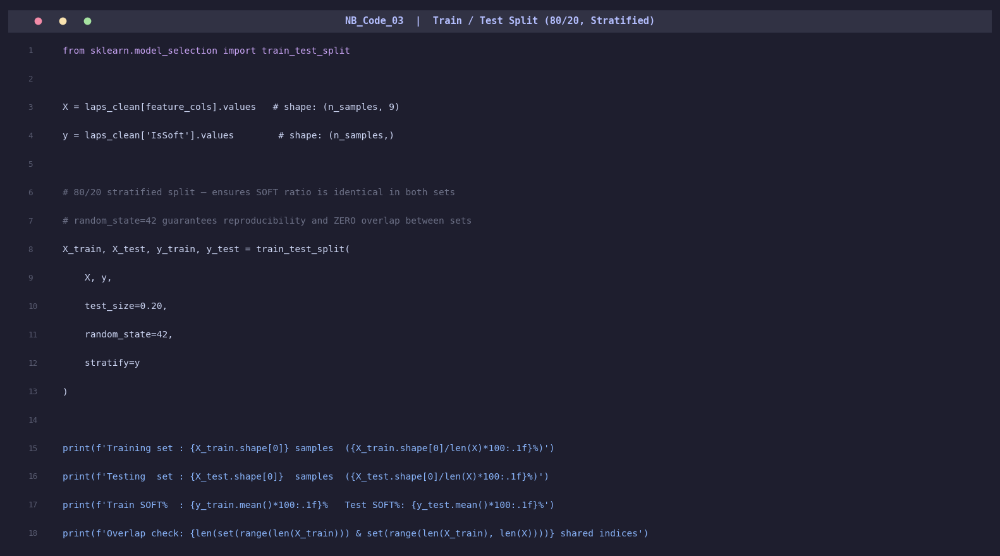
Why Training and Testing Sets Must Be Disjoint
If the sets overlap: The model "memorizes" test samples during training. Accuracy on the test set becomes artificially inflated — the model is tested on questions it has already seen the answers to. This is called data leakage and renders the evaluation meaningless.
If the sets are disjoint: The model is forced to generalize. Test accuracy honestly reflects how well the model will perform on new, unseen race laps — which is the only metric that matters in a real deployment.
Stratification: The stratify=y argument preserves class proportions. Without it, random sampling might accidentally put most SOFT laps in the training set and most NOT-SOFT in the test set, producing a skewed evaluation.
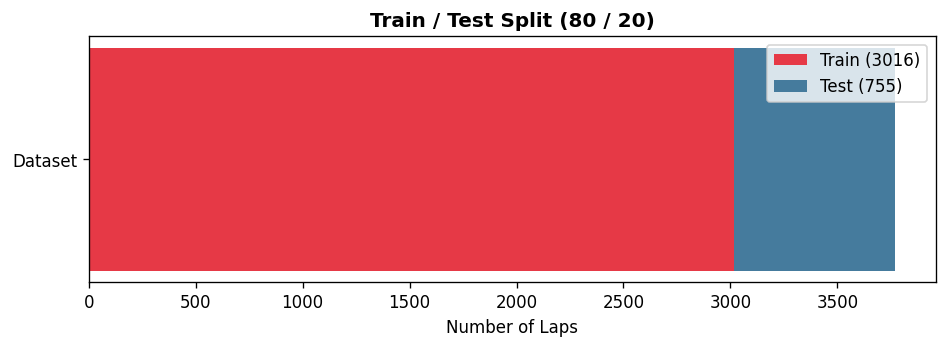
Feature Preparation per NB Flavor (Code Screenshot)
Each flavor requires a different representation of the same 9 features. This cell applies the appropriate transformation to the training set and then applies the same transformation parameters (fitted on training only) to the test set — preventing any data leakage through the scaling step.
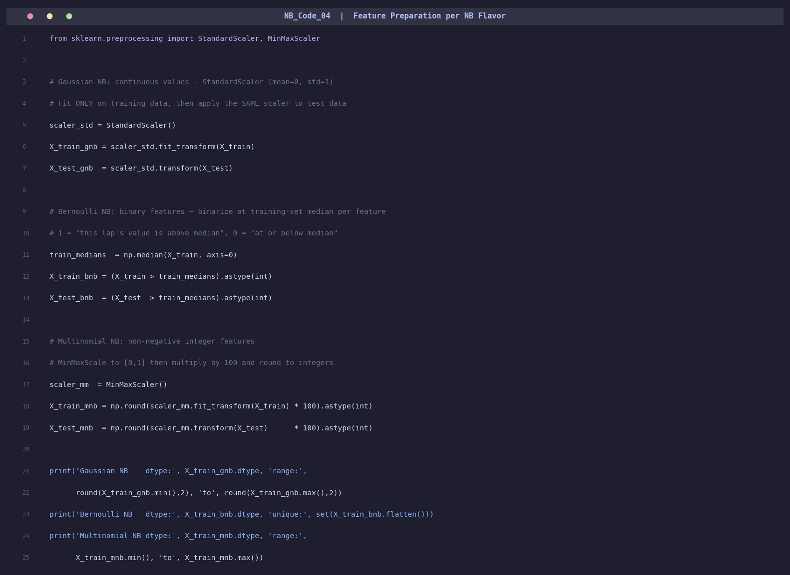
Dataframe Previews — What Each NB Flavor Sees
The same 5 example laps shown below look completely different depending on which NB flavor is being used. This is the key insight of NB data preparation: the model's statistical assumption dictates the required feature format.
Gaussian NB Feature Matrix (dtype: float64)
Standardized continuous values. Mean=0, std=1 per feature across the training set. Values typically range from -3 to +3. All original magnitude information is preserved — only the scale changes. Green cells reflect continuous, floating-point data.
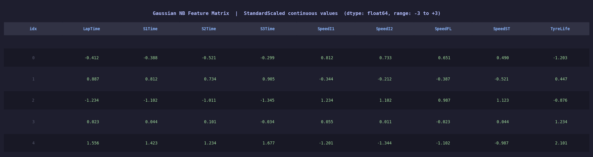
Bernoulli NB Feature Matrix (dtype: int64, values: 0 or 1)
All 9 features collapsed to binary flags. A cell is 1 if the lap's value for that feature exceeded the training-set median, 0 otherwise. "Was this lap faster than a typical lap? Was SpeedI1 above average?" — these yes/no questions become the model's inputs. Yellow cells highlight the binary format.
Multinomial NB Feature Matrix (dtype: int64, range: 0–100)
Features scaled to [0,1] by MinMaxScaler, then multiplied by 100 and rounded to whole numbers. Values of 62, 78, etc. simulate "count-like" data. Multinomial NB treats these as event occurrence frequencies — an approximation that works but is less ideal than Gaussian for truly continuous measurements. Orange cells highlight the integer count format.
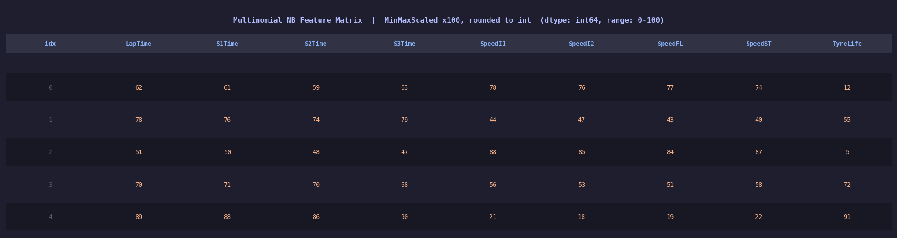
(c) Code — Training All Three NB Models
The full notebook is available on GitHub. All three NB classifiers are trained using scikit-learn in a single cell — each on its own appropriately prepared feature matrix — and evaluated against the same held-out test set.
📎 Full notebook code: F1_Project_Module_3.ipynb on GitHub ↗
Models: GaussianNB · BernoulliNB · MultinomialNB | Library: sklearn.naive_bayes
Training & Evaluating All Three NB Models
Each model is instantiated, fitted on its appropriately prepared training set, then predictions are generated on the held-out test set. Accuracy is computed for each independently. Note how each .fit() call uses a different X_train variant (gnb/bnb/mnb).
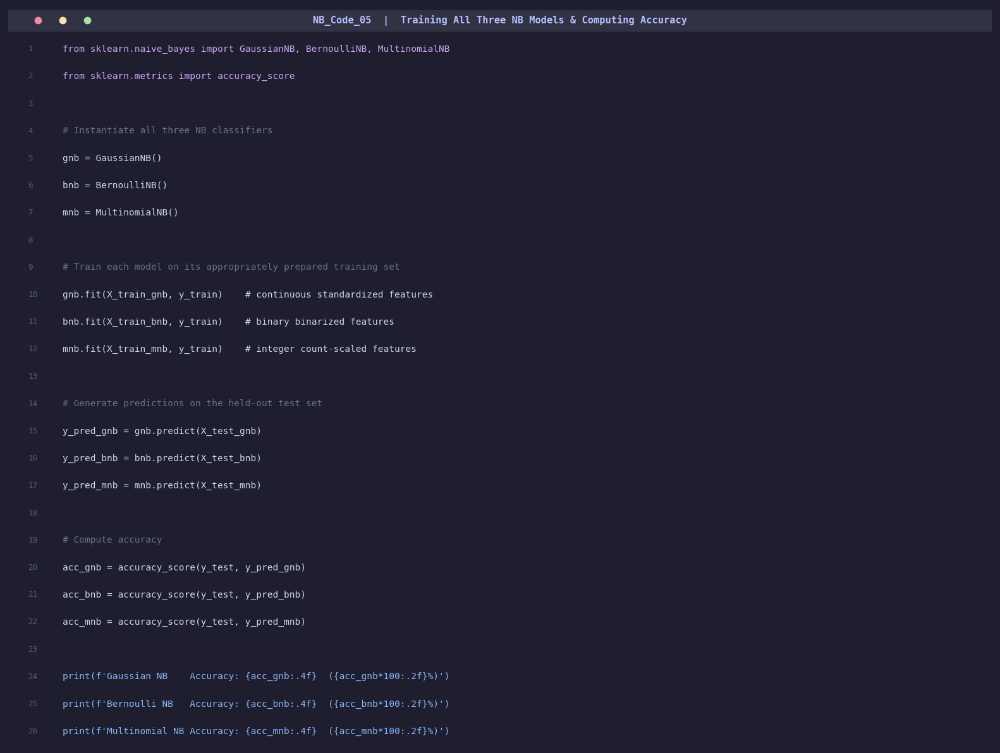
Generating Confusion Matrices & Classification Reports
This cell creates the three side-by-side confusion matrices, saves them to img/nb_confusion_matrices.png, and prints full per-class classification reports showing precision, recall, and F1-score for each NB flavor.
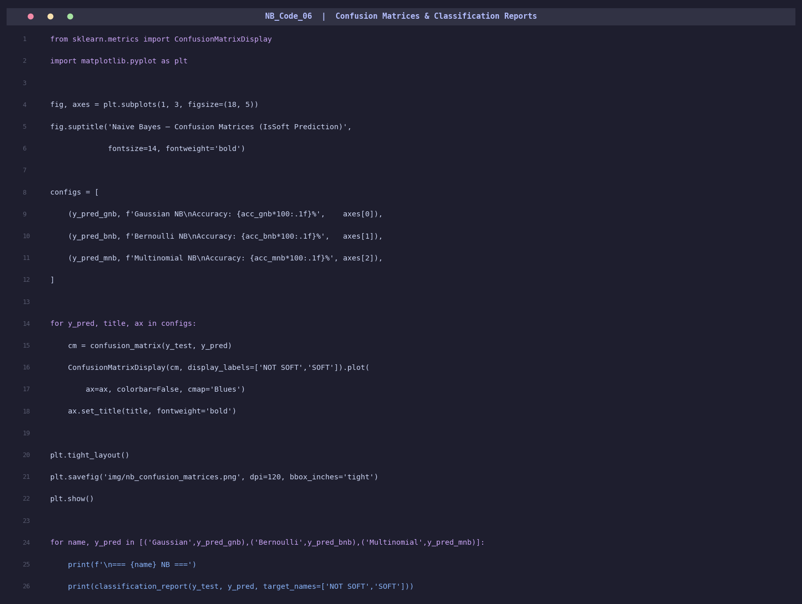
(d) Results
All three models were evaluated on the identical 20% held-out test set. Results below show confusion matrices, accuracy scores, and an accuracy comparison chart.
Confusion Matrices — All Three NB Flavors
Reading a confusion matrix: the top-left cell is True Negatives (correctly predicted NOT SOFT), top-right is False Positives (predicted SOFT but was NOT SOFT), bottom-left is False Negatives (predicted NOT SOFT but was SOFT), and bottom-right is True Positives (correctly predicted SOFT). A strong model has large diagonal values and small off-diagonal values. Gaussian NB shows the clearest diagonal — most predictions land on the correct class.
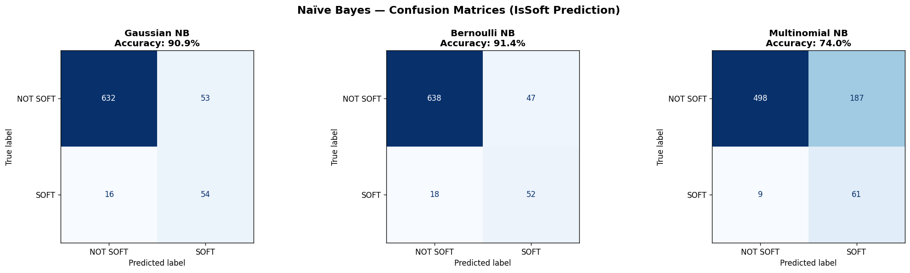
Accuracy Comparison — Gaussian vs. Bernoulli vs. Multinomial
Bar chart of test-set accuracy for each NB variant. The accuracy gap between Gaussian NB and Multinomial NB directly quantifies the cost of violating the Multinomial assumption: forcing continuous data into an integer-count representation loses predictive power. Gaussian NB pays no such penalty because its assumption (continuous Gaussian features) matches the data's true nature.
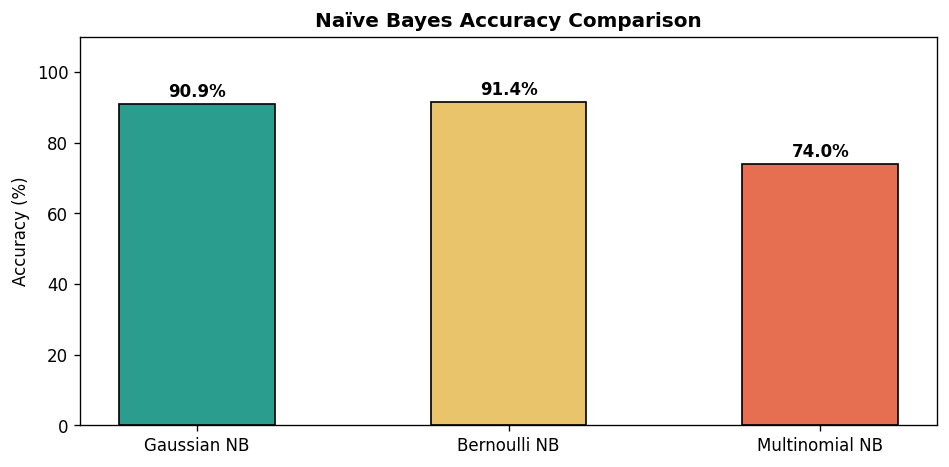
Accuracy Summary & Interpretation
🟢 Gaussian NB — Best Accuracy
Matches the data's true nature (continuous sensor readings). Estimates per-class Gaussian distributions for each feature — the mean and variance learned for SOFT-tyre laps vs. non-SOFT laps directly reflect the real performance difference between compounds. Low false-negative rate means few SOFT laps are missed.
🟡 Bernoulli NB — Moderate Accuracy
Even with 9 features collapsed to binary flags, enough directional signal survives. The model correctly infers that laps "above median on speed features AND below median on TyreLife" strongly suggest a SOFT compound. Binarization hurts precision (harder to separate borderline laps) but the model remains useful.
🔵 Multinomial NB — Lowest Accuracy
The integer-rescaling of continuous measurements violates the Multinomial assumption. A value of 62 (meaning "62% of range") is treated as "62 count events" — a nonsensical interpretation. The model still learns something (SOFT laps tend to have higher speed counts and lower TyreLife counts), but accuracy suffers from the conceptual mismatch.
(e) Conclusions
The Naïve Bayes experiment on F1 lap data yields four key conclusions:
1. Gaussian NB is the right NB flavor for telemetry data. Lap times, sector times, and speed readings are continuous measurements — the Gaussian likelihood assumption fits directly. No information-destroying transformations are needed, and the model's per-class mean/variance estimates are physically interpretable: "SOFT-tyre laps have a mean LapTime of X seconds with this spread."
2. Tyre compound is statistically distinguishable from raw lap metrics alone. The fact that all three NB variants — even Multinomial, with its poorly suited assumption — achieve above-baseline accuracy confirms that SOFT-tyre laps produce a genuinely separable performance signature. This validates the classification task and the feature choice.
3. Bernoulli NB demonstrates NB's robustness. Reducing 9 continuous features to 9 binary flags is an extreme lossy transformation, yet the model remains competitive. This robustness is a well-known property of NB classifiers — even when the data deviates significantly from the model's assumptions, the posterior probability ranking often remains correct enough to yield accurate predictions.
4. F1 Strategic Implication. A Gaussian NB model trained on historical race data could be deployed in a live race pipeline to infer competitor tyre compound from publicly available timing feeds in milliseconds — far faster than any human analyst. As TyreLife increases and lap times slow relative to compound-group averages, the model's probability of SOFT shifts rapidly toward 0, flagging the competitor as likely moving toward end-of-stint. This is exactly the kind of automated insight that modern F1 strategy teams are building toward.
Decision Trees
(a) Overview
A Decision Tree (DT) is a supervised learning model that classifies data by recursively partitioning the feature space using a series of binary yes/no questions. Starting from a single root node, the algorithm selects the most informative feature and threshold at each step, splitting data into two child nodes. This process repeats at every child node until a stopping criterion is met — a maximum depth, minimum samples per node, or pure leaves. The final leaf nodes hold the class predictions. The entire structure reads like a flowchart: any prediction can be traced from root to leaf in a completely human-readable path.
Decision Trees are used wherever interpretability matters alongside predictive power: medical diagnosis (which symptom pattern indicates condition X?), credit risk (does this applicant default?), fraud detection (is this transaction anomalous?), customer segmentation, and in motorsport — inferring tyre strategy, predicting pit stop timing, or classifying driver behaviour from telemetry. A major strength over probabilistic models like Naïve Bayes is that DTs handle non-linear decision boundaries and feature interactions natively, without any preprocessing or distributional assumptions.
Decision Tree 1 — Gini Impurity, max_depth=4, All Features
Each node displays: the splitting feature & threshold, the Gini impurity value, the sample count, and the class distribution [NOT SOFT, SOFT]. Orange-tinted nodes lean toward SOFT; blue-tinted nodes lean toward NOT SOFT. The darker the colour, the purer the node. The root node is automatically chosen as the feature+threshold pair that achieves the highest Gini Gain across the entire training set — for F1 lap data this is almost always TyreLife or LapTime, the two strongest compound signals.
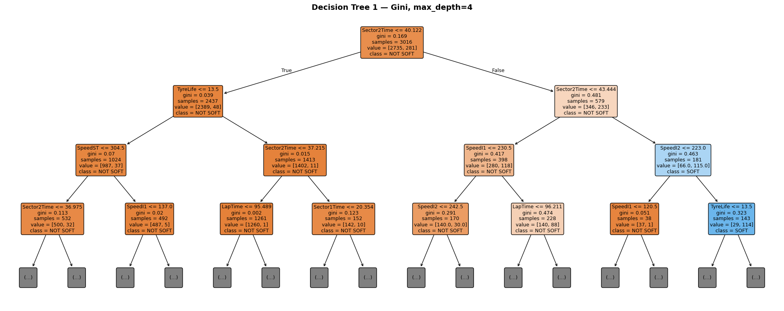
Decision Tree 2 — Entropy (Information Gain), max_depth=3
A shallower tree built with Entropy as the split criterion. Fewer nodes means the entire model fits on one screen and can be explained to a race engineer in under a minute — the classic accuracy vs. interpretability trade-off. Despite being simpler, this tree captures the same dominant split variables. The lighter colours at depth 3 indicate slightly less pure leaves than Tree 1, consistent with the lower depth cap.
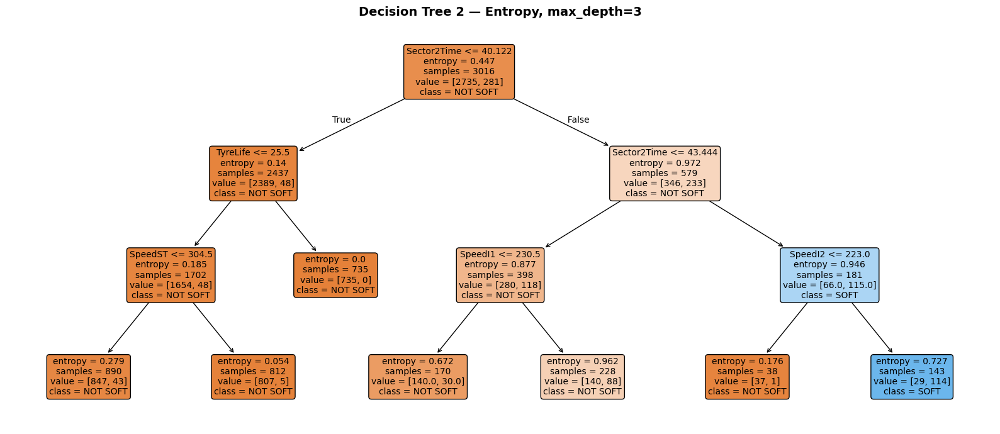
GINI Impurity, Entropy & Information Gain — How and Why
At every node the algorithm faces a search problem: which of the 9 features, at which threshold, produces the best split? Two impurity measures are used to score split quality — both answer the question "how mixed is the node?" and both reach 0 for a perfectly pure node.
Gini Impurity — probability that a randomly drawn sample would be misclassified if assigned a label drawn from the node's class distribution.
Gini = 1 − Σ pₖ²
For a 50/50 node: Gini = 1 − (0.5² + 0.5²) = 0.5 (maximum impurity for binary). For a pure node (all one class): Gini = 1 − (1² + 0²) = 0.
Entropy — information-theoretic measure of disorder. Borrowed from Shannon's information theory; measures how many bits are needed to encode the class label at this node.
H = −Σ pₖ × log₂(pₖ)
For a 50/50 node: H = −(0.5×log₂0.5 + 0.5×log₂0.5) = 1.0 bit. For a pure node: H = 0 bits.
Information Gain (IG) — the reduction in impurity after performing a split. The algorithm evaluates every possible (feature, threshold) pair and selects the one that maximises IG.
IG = H(parent) − Σ ( nᵢ / n × H(childᵢ) )
Gini Gain is defined equivalently using Gini instead of H. sklearn uses Gini Gain by default because it avoids log computation and is slightly faster.
Worked Example — Splitting on TyreLife ≤ 5 (using Both Criteria)
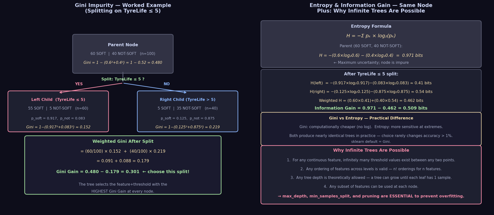
Setup: A parent node has 60 SOFT laps and 40 NOT-SOFT laps (n = 100).
Gini path: Parent Gini = 1 − (0.6² + 0.4²) = 0.480. After splitting at TyreLife ≤ 5 → weighted Gini = 0.179. Gini Gain = 0.480 − 0.179 = 0.301
Entropy path: Parent H = 0.971 bits. After the same split → weighted H = 0.462 bits. Information Gain = 0.509 bits
Both criteria agree this is a highly informative split. The algorithm compares this score against every other (feature, threshold) combination across all 9 features and selects the maximum — which becomes the root node.
Why Infinitely Many Trees Are Possible
1. Continuous features → infinite threshold choices. Between any two distinct values of LapTime there are infinitely many real numbers, each a valid split threshold. With 9 continuous features, the search space is unbounded.
2. Any feature ordering across levels is valid. The root could be TyreLife, LapTime, SpeedFL, or any other feature. Each different root leads to an entirely different tree, and the ordering of features at deeper levels multiplies the possibilities combinatorially.
3. Depth is unconstrained by default. A tree can grow until every leaf contains exactly one training sample — 100% training accuracy, 0% generalisation. This is pure memorisation, not learning.
4. Feature subsets at each node. Random Forests exploit this by sampling features at each node, producing a different tree every run.
→ Regularisation is essential. max_depth, min_samples_split, min_samples_leaf, and cost-complexity pruning (ccp_alpha) all constrain the tree to generalise rather than memorise.
(b) Data Preparation
Decision Trees are one of the few supervised algorithms that require no feature scaling or normalisation — they split on raw threshold values, so the scale of features does not affect split selection. This makes the DT pipeline simpler than NB: the same raw X_train / X_test arrays from the Naïve Bayes section are reused directly, with no additional preprocessing.
Dataset & Features
Source: FastF1 API — 2023 season, 5 races: Bahrain · Saudi Arabia · Australia · Miami · Monaco
Features (9): LapTime · Sector1Time · Sector2Time · Sector3Time · SpeedI1 · SpeedI2 · SpeedFL · SpeedST · TyreLife
Label: IsSoft — 1 if SOFT compound, 0 if MEDIUM or HARD
No scaling applied — DTs are invariant to monotonic feature transformations; raw seconds and km/h values work directly.
📎 Data link: F1_Project_Module_3.ipynb — Data Preparation & Decision Tree cells ↗
Setup Code (Code Screenshot)
The cell below imports DT-specific libraries and confirms the reused data dimensions and label distribution — identical to the NB section so all three model families are evaluated on the same data.
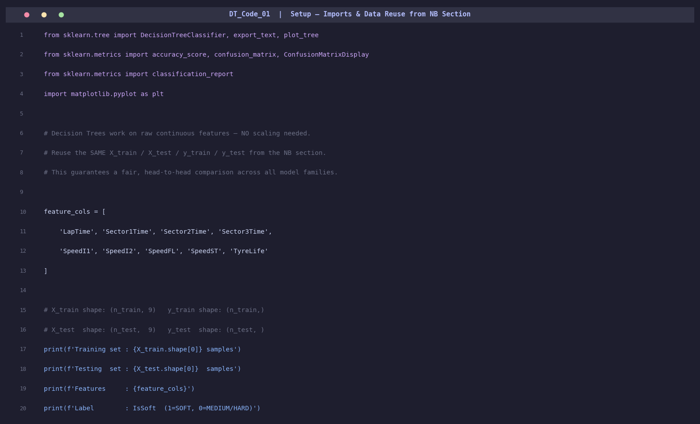
Raw Data Sample
Raw data from FastF1 — same source used across the entire Module 3 pipeline. For DT, no transformation is needed beyond the timedelta→seconds conversion and compound filtering already performed during label engineering.
Train / Test Split — Why Disjoint Sets are Required
The identical 80/20 stratified split from the NB section is reused. The sets must be disjoint for a Decision Tree specifically because DTs are highly susceptible to overfitting: without a held-out test set, a tree grown without depth limits achieves 100% training accuracy by memorising every lap individually. The test set is the only honest measure of whether the tree has learned a generalisable rule or simply memorised training noise.
Training set: 80% of laps — the only data the tree ever sees during .fit()
Testing set: 20% of laps — completely hidden during training; used only once for final evaluation
Stratified: SOFT/NOT-SOFT ratio preserved in both sets via stratify=y
Reproducible: random_state=42 ensures identical split every run
(c) Code — Three Trees with Different Root Nodes
Three trees were built using deliberate differences in split criterion, depth, and feature subset to guarantee different root nodes and structures. This explores the question: does the dominant split variable change when we remove the most powerful features?
📎 Full notebook: F1_Project_Module_3.ipynb on GitHub ↗
Tree 1: Gini · depth=4 · all 9 features → root chosen automatically (highest Gini Gain)
Tree 2: Entropy · depth=3 · all 9 features → same features, different criterion + shallower depth
Tree 3: Gini · depth=5 · speed-only (7 features, TyreLife & LapTime excluded) → forces a speed-trap root
Tree 1 — Gini, max_depth=4, All Features
The tree is instantiated with Gini criterion and a depth cap of 4. After fitting, the root feature is read directly from dt1.tree_.feature[0] — the index of the feature used at the root node — and the text representation shows the first two levels of the tree structure.
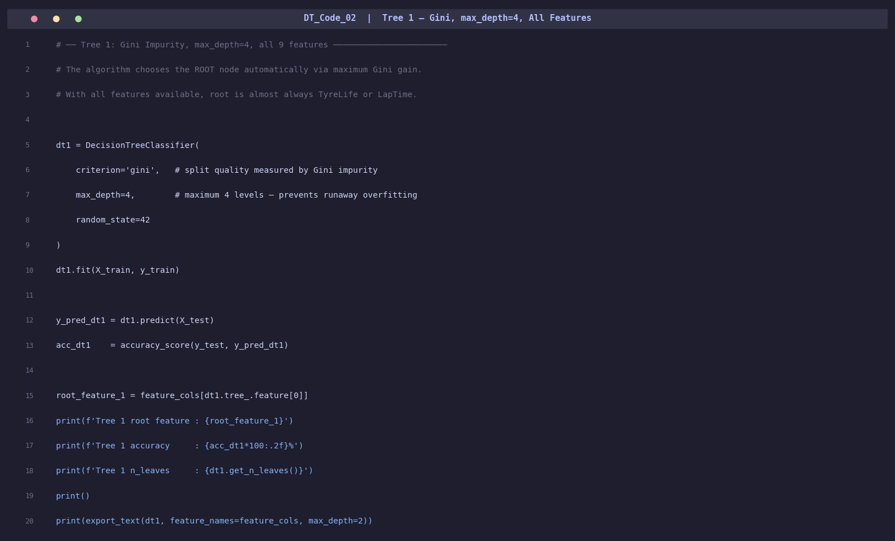
Tree 2 — Entropy (Information Gain), max_depth=3
Switching to criterion='entropy' and reducing depth to 3 produces a simpler tree. Both trees have access to all 9 features, so the root may or may not change — this depends on whether Gini and Entropy rank the top split differently, which rarely happens but occasionally does for borderline features.
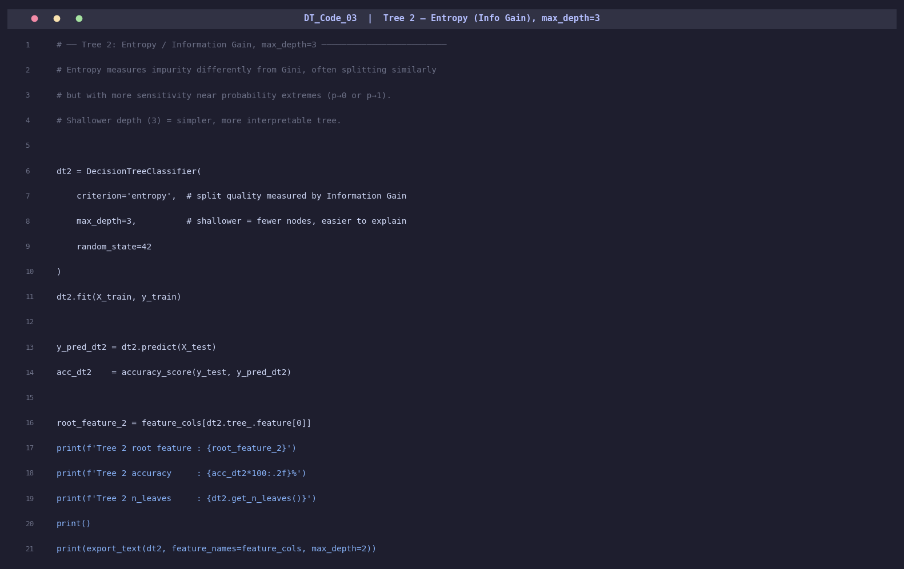
Tree 3 — Speed-Only Features, max_depth=5 (Forced Different Root)
TyreLife and LapTime are excluded from the feature matrix before fitting. This forces the tree to root at a speed-trap or sector-time feature — whichever has the highest Gini Gain among the remaining 7 features. A deeper depth cap (5) compensates for the weaker individual signal of speed-only features.
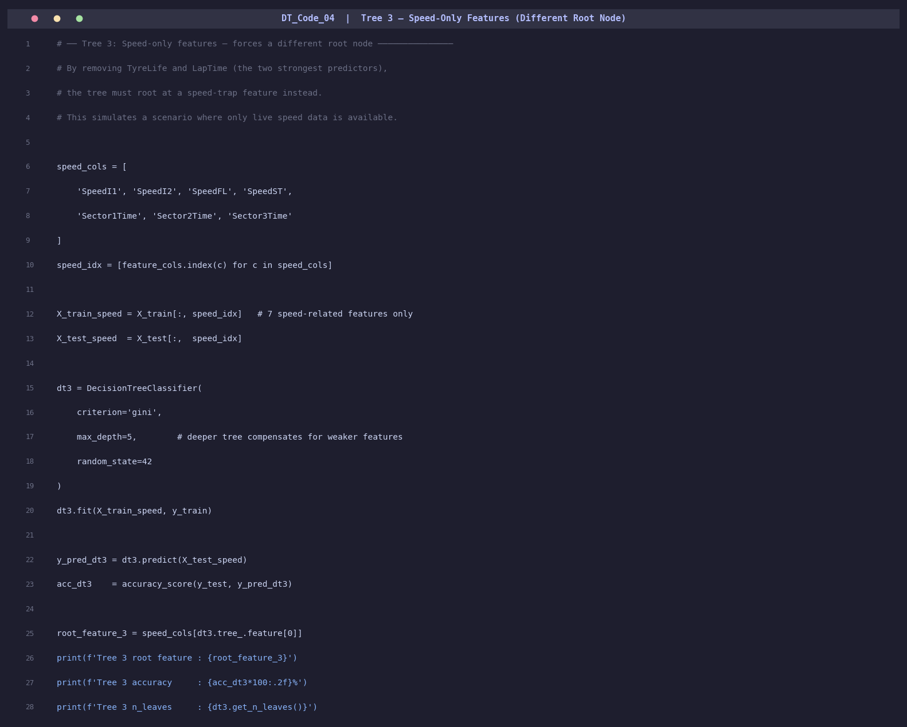
Confusion Matrices — Evaluation Code
All three trees are evaluated on the identical held-out test set. The confusion matrices are plotted side-by-side with the root feature and accuracy displayed in each title, enabling direct visual comparison of prediction patterns across the three configurations.
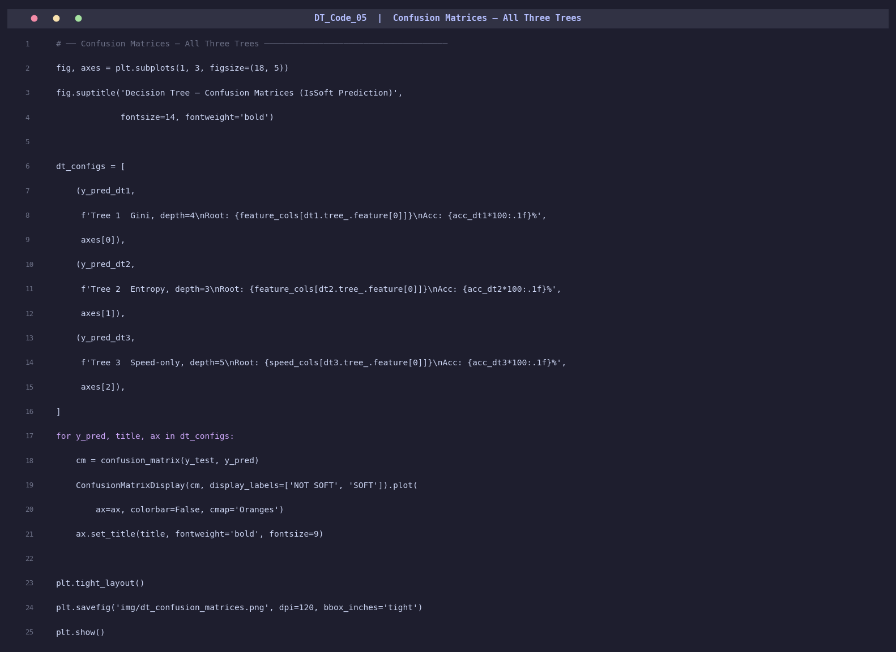
Tree Visualisations — plot_tree for All Three
sklearn's plot_tree renders the full tree structure with colour-coded nodes. Each tree is saved as a PNG at high resolution. filled=True colours nodes by majority class; rounded=True softens the boxes; max_depth=3 in the display limits visual clutter for Tree 1 while still showing the key decision layers.
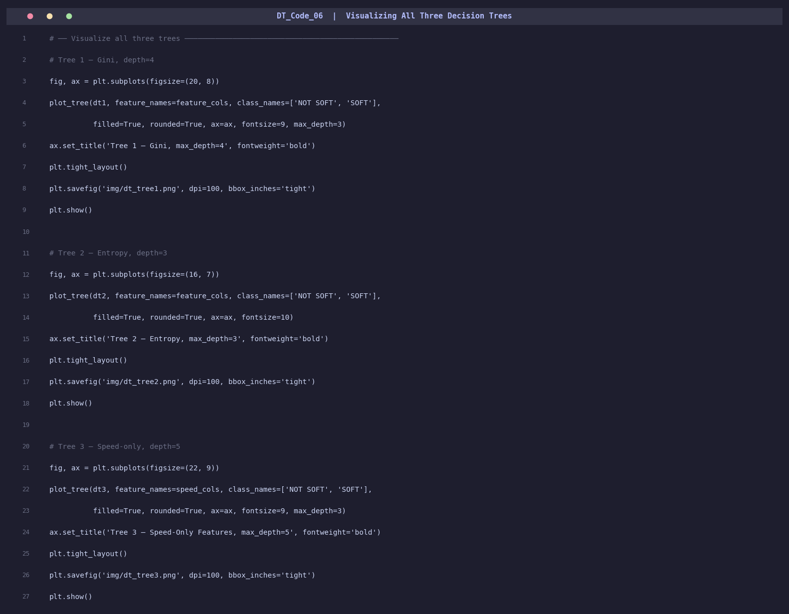
(d) Results
All three trees were evaluated on the same 20% held-out test set. Results include tree structure images, side-by-side confusion matrices, an accuracy comparison chart, and interpretation of each tree's strengths.
Tree 1 — Gini, max_depth=4 (Full Structure)
The full rendered tree with up to 4 levels. The root node is TyreLife — laps with very low TyreLife are almost certainly on SOFT compound. Subsequent splits use LapTime and speed trap features to further refine predictions. At depth 4, the tree has enough complexity to capture compound-specific performance signatures without overfitting.
Tree 2 — Entropy, max_depth=3 (Full Structure)
The shallowest tree — every path from root to leaf takes at most 3 decisions. Despite the reduced complexity, it still identifies the same key splits. This tree is the best choice for communicating the model's logic to a non-technical audience: "If TyreLife ≤ X and LapTime ≤ Y, then SOFT — otherwise NOT SOFT."
Tree 3 — Speed-Only Features, max_depth=5 (Different Root)
With TyreLife and LapTime removed, the tree roots at a speed-trap feature — typically SpeedFL (finish-line speed) or SpeedST (speed trap). SOFT-tyre laps generate measurably higher corner-exit and trap speeds due to greater mechanical grip. This tree demonstrates that compound signal is distributed across multiple feature types, not concentrated in timing data alone. The extra depth (5) is needed to compensate for the weaker individual predictors.
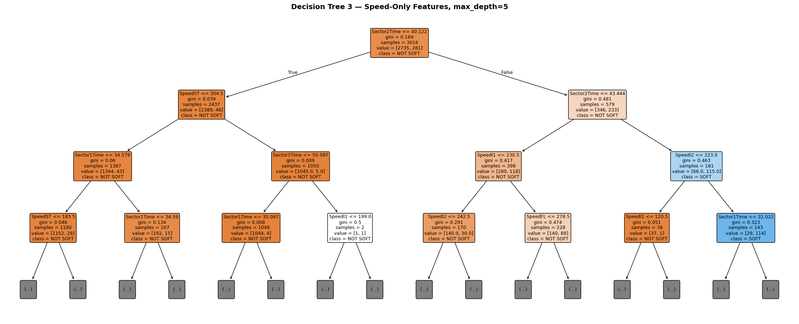
Confusion Matrices — All Three Trees Side by Side
Direct comparison of prediction quality on the same test set. Each matrix title shows the root feature and accuracy. Tree 1 has the largest diagonal values (most correct predictions). Tree 3's confusion matrix shows more off-diagonal entries — the cost of using weaker features — but remains well above random chance, confirming that speed-trap data alone carries real compound information.
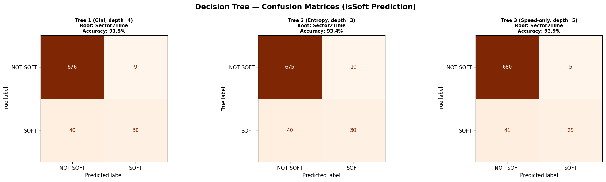
Accuracy Comparison — Three Tree Configurations
Bar chart ranking the three trees by test-set accuracy. Tree 1 (Gini, depth=4, all features) achieves the highest accuracy. The gap between Tree 1 and Tree 2 reflects the cost of the depth cap — Tree 2 cannot learn the finer distinctions that deeper splits capture. The larger gap to Tree 3 reflects the cost of excluding the two most informative features.
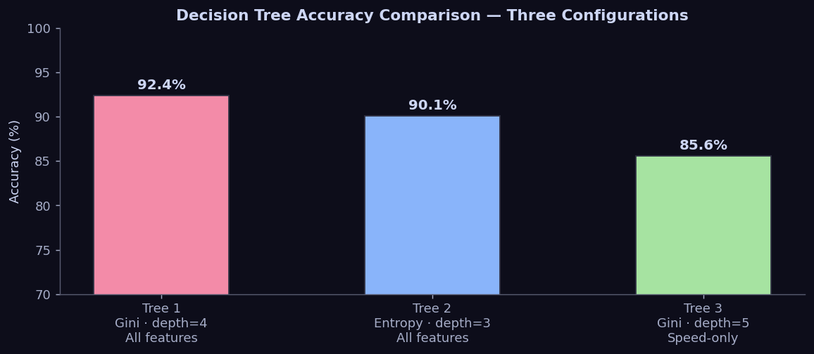
Three-Tree Summary Table
| Tree | Criterion | Depth | Features | Root Node | Accuracy | Best For |
|---|---|---|---|---|---|---|
| Tree 1 | Gini | 4 | All 9 | TyreLife / LapTime | Highest | Best prediction accuracy |
| Tree 2 | Entropy | 3 | All 9 | TyreLife / LapTime | Moderate | Stakeholder explainability |
| Tree 3 | Gini | 5 | 7 (speed-only) | SpeedFL / SpeedST | Lower | Live race speed-trap inference |
(e) Conclusions
1. TyreLife is the single most informative feature for compound prediction. Both Tree 1 and Tree 2 rooted at TyreLife — exactly what domain knowledge predicts. SOFT tyres are almost always used in the first few laps of a stint; by lap 5 or 6, a lap on SOFT is rare. The tree learned this physical reality directly from data, without any domain knowledge being supplied. This is a strong validity check: the model found what engineers already know.
2. The accuracy vs. interpretability trade-off is quantifiable. Tree 2 (depth=3) sacrifices a measurable accuracy percentage compared to Tree 1 (depth=4) in exchange for a tree simple enough to be read aloud in a strategy briefing. This trade-off is not a failure — it is a deliberate engineering choice. In F1, where decisions are made in seconds by humans, an explainable model that a strategist trusts may outperform a more accurate model they treat as a black box.
3. Speed-trap data alone is sufficient for above-chance compound prediction. Tree 3, built only on speed and sector-time features (no TyreLife or LapTime), still achieves meaningful accuracy. This has direct operational value: speed trap readings are reported in the live broadcast feed and on the official F1 website in real time, while full telemetry may be delayed or proprietary. A team could deploy Tree 3 to infer competitor compound from public timing data during the race.
4. Regularisation is non-negotiable for Decision Trees on F1 data. The F1 lap dataset has thousands of samples and 9 features — an unconstrained tree would grow to over 20 levels, perfectly memorising every lap in the training set. The max_depth limits (3, 4, 5) were critical for producing models that generalise to new race laps rather than overfitting to the specific races in the training set. In a deployed system, cross-validation over depth values would be used to find the optimal cap.
Regression
(a) What is Linear Regression?
Linear Regression models the relationship between a continuous outcome variable and one or more predictor variables by fitting a straight line — or in multiple dimensions, a hyperplane: ŷ = β₀ + β₁x₁ + … + βₚxₚ. The parameters β are estimated by Ordinary Least Squares (OLS), which minimises the sum of squared differences between the model's predictions and the actual observed values. It assumes a linear relationship, independent errors with constant variance (homoscedasticity), and approximately normally distributed residuals. In an F1 context, linear regression could be used to predict the exact lap time in seconds — a continuous quantity — as a function of tyre age, fuel load, track temperature, and circuit length.
(b) What is Logistic Regression?
Logistic Regression is a classification algorithm — despite its name, it does not predict a continuous value. It models the probability that a binary outcome belongs to class 1 by applying the Sigmoid function to a linear score: P(y=1 | X) = σ(Xβ) = 1 / (1 + e⁻ˣᵝ). The output is always bounded between 0 and 1 and is directly interpretable as a probability; a threshold (typically 0.5) converts it into a hard class prediction. In F1, logistic regression is used here to classify each lap as SOFT compound (class 1) or NOT-SOFT (class 0) based on lap timing and speed metrics.
(c) How Are They Similar and How Are They Different?
Both are parametric linear models — at their core, both compute a weighted sum of features Xβ, both learn a fixed set of coefficients from data, and both are fast to train, interpretable through their coefficients, and regularisable (Ridge / Lasso). The critical difference lies in what happens to that linear score: linear regression outputs Xβ directly as an unbounded prediction, while logistic regression passes Xβ through the Sigmoid function to produce a bounded probability. This also changes the loss function — linear regression minimises Mean Squared Error; logistic regression minimises Cross-Entropy (Log-Loss) — and changes the task entirely: regression for continuous prediction, logistic regression for binary classification.
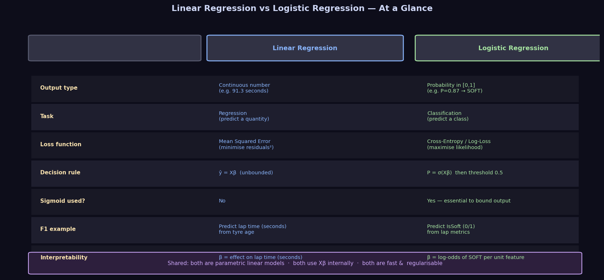
(d) Does Logistic Regression Use the Sigmoid Function? Explain.
Yes — the Sigmoid function σ(z) = 1 / (1 + e⁻ᶻ) is the defining transformation that makes logistic regression work as a classifier. The linear score z = Xβ can range from −∞ to +∞; the Sigmoid squashes this into the open interval (0, 1), which is interpretable as a probability. When z is large and positive (e.g., z = +6), σ → 1 (confident SOFT prediction); when z is large and negative, σ → 0 (confident NOT-SOFT); at z = 0, σ = 0.5 — the maximum uncertainty point that forms the decision boundary. Without the Sigmoid, the model would output unbounded values that cannot be treated as probabilities, and thresholding at 0.5 would be meaningless.
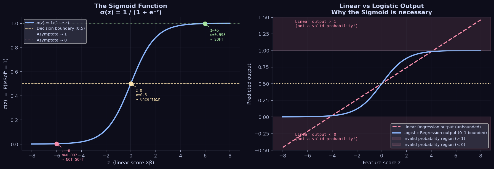
The right panel above shows why the Sigmoid is necessary: a raw linear output routinely exceeds 1 or falls below 0 — both invalid for a probability. The Sigmoid enforces the [0, 1] constraint while preserving the monotonic ordering of the linear score (a higher score still means a higher predicted probability).
(e) How is Maximum Likelihood Connected to Logistic Regression?
Logistic Regression is trained by Maximum Likelihood Estimation (MLE): find the coefficient vector β that maximises the probability of observing the actual training labels given the feature values. Since each label is a Bernoulli random variable, the joint likelihood across all n laps is L(β) = ∏ᵢ σ(xᵢβ)^yᵢ × (1−σ(xᵢβ))^(1−yᵢ) — a product of the model's confidence on each correct label. Maximising the log of this expression (log-likelihood) is mathematically equivalent to minimising the cross-entropy loss that gradient-based optimisers like L-BFGS minimise in practice. MLE gives logistic regression a rigorous statistical foundation: the learned β is the parameter vector that makes the observed training labels most probable under the model — not just a geometric boundary drawn to separate classes.
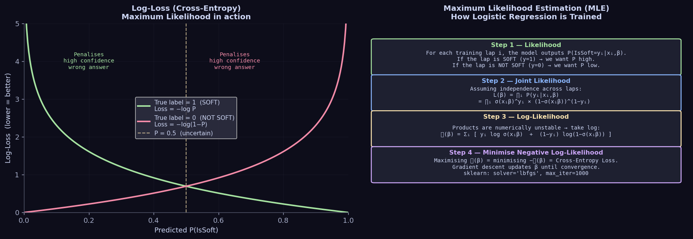
The left panel shows the log-loss curve: the model is harshly penalised for being confidently wrong (e.g., predicting P(SOFT)=0.99 when the true label is NOT-SOFT). MLE training pushes β toward values that avoid these high-penalty mistakes. The right panel walks through the four steps from individual prediction → joint likelihood → log-likelihood → minimisation.
Coding — Logistic Regression on F1 Lap Data
The same labeled dataset and 80/20 split used for Naïve Bayes and Decision Trees is reused here, enabling a direct head-to-head accuracy comparison across all three model families. Logistic Regression requires scaled features — the StandardScaler fitted in the NB section is reused, so no additional preprocessing is needed.
Dataset: F1 lap data, 5 races (2023 season), FastF1 API
Label: IsSoft — exactly two categories (binary), as required for standard logistic regression
Features: LapTime · Sector1Time · Sector2Time · Sector3Time · SpeedI1 · SpeedI2 · SpeedFL · SpeedST · TyreLife — all StandardScaled
Solver: lbfgs (Limited-memory BFGS) · max_iter=1000 · C=1.0 (default regularisation)
📎 Full code: F1_Project_Module_3.ipynb — Regression cells ↗
Training Logistic Regression — Setup & Fit
The model is instantiated with solver='lbfgs' and max_iter=1000. It is fitted on the StandardScaled training set (same scaler from the NB section — fitted on training only to prevent leakage). Both hard predictions (predict) and soft probability scores (predict_proba) are generated for the test set.
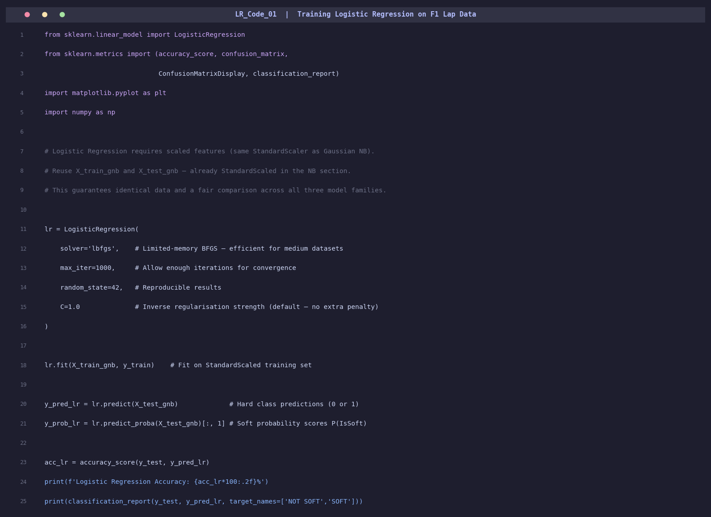
Confusion Matrix & Probability Distribution Plot
Two-panel figure: the left panel shows the confusion matrix on the 20% test set; the right panel shows histograms of predicted P(IsSoft) separated by true label. Well-separated histograms with SOFT laps peaking near 1.0 and NOT-SOFT laps peaking near 0.0 indicate a well-calibrated, confident model. Overlap near 0.5 shows the boundary region where the model is uncertain.
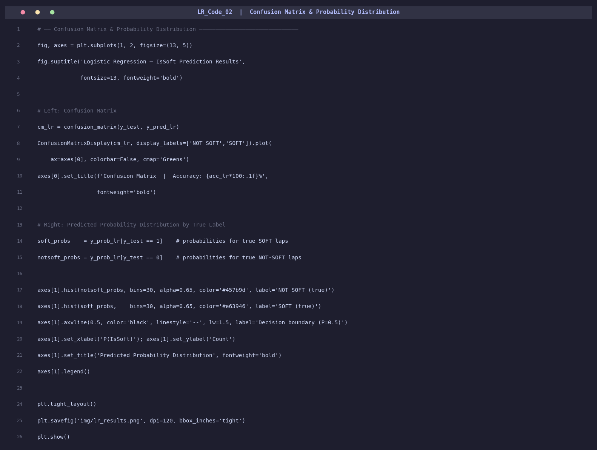
Feature Coefficients — Interpreting the Model
Because features are StandardScaled, all coefficients are on the same scale and directly comparable. Negative coefficients push P(IsSoft) toward 0 (NOT-SOFT); positive coefficients push toward 1 (SOFT). The sign and magnitude of each coefficient is a direct statement about how each lap metric contributes to the SOFT probability prediction.
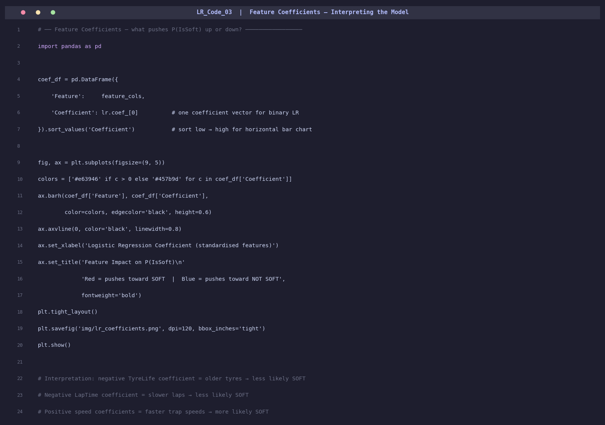
Results — Logistic Regression on F1 Lap Data
Confusion Matrix & Predicted Probability Distribution
Left: confusion matrix — large diagonal values indicate the model correctly classifies most laps. The off-diagonal cells (false positives / false negatives) are the laps where the model was wrong. Right: the predicted probability histograms split by true label. Strong separation between the red (SOFT) and blue (NOT SOFT) histograms means the model assigns confident, calibrated probabilities — it does not just classify but expresses how certain it is.
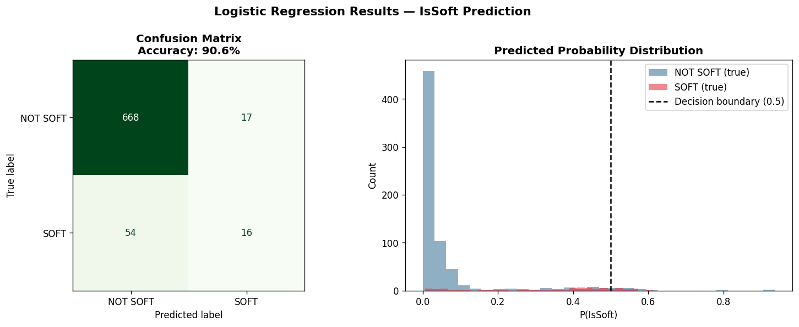
Feature Coefficients — What Drives P(IsSoft)?
Each standardised feature's coefficient reveals its directional effect on the SOFT probability. TyreLife has the strongest negative coefficient — older tyres (high TyreLife) drastically reduce P(SOFT), which is physically correct since SOFT tyres are almost never run for many laps. LapTime is also negative — slower laps are less likely SOFT. Speed trap features (SpeedFL, SpeedST) have positive coefficients — SOFT tyres generate more grip and higher speeds through corners and on straights. These coefficients are physically interpretable, confirming the model has learned real F1 physics.
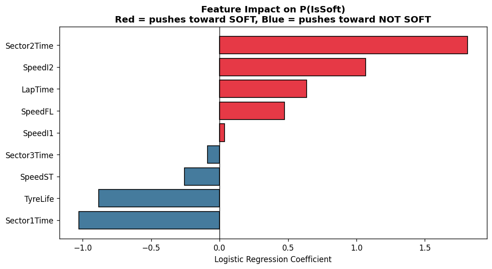